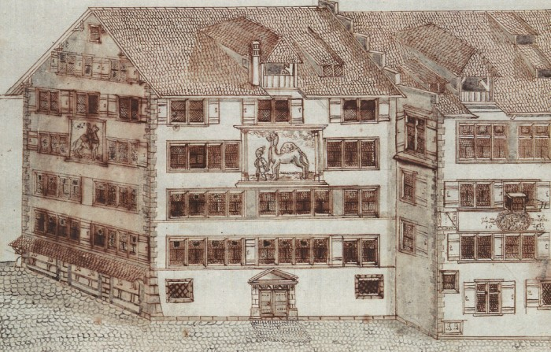

Waldmanns politischer Aufstieg
Was gibt es hier zu sehen?
Waldmann war Zunftmeister der Kämbel-Zunft. Das ehemalige Zunfthaus ‹zur Kämbel› steht am Münsterhof.
‹Kämbel›
Die Kämbelzunft war die Vereinigung der Kleinhändler (Gemüsehändler, ‹Grempler› und Salzhändler). Der Name Kämbel geht auf die Bezeichnung ihrer Trinkstube zurück, dem «Kürschnerhaus zum Kämeltier am Münsterhof». Mit dem Kämeltier ist nicht ein Kamel, sondern die Angoraziege gemeint. Die Kämbelzunft, deren Zunftmeister Waldmann seit 1473 war, erwarb das Haus 1487.[1] Waldmann trug wohl erheblich zum Ausbau und zur Ausstattung des Gebäudes bei.
Kämbel, Escher: Anderer Theil des Regiments-Buch, Kantonsbibliothek Aarau, MsMur F 33.2, S. 68/69.
Waldmanns Aufstieg über die Zünfte
Über seine Heirat fand Waldmann Aufnahme in die Zürcher Konstaffel, die regierende städtische Oberschicht. Doch seine Möglichkeiten im Kreise der Junkergeschlechter waren begrenzt.
Also verfolgte er seine Ambitionen in den Zünften, dem zweiten Machtfaktor in der Stadt. Zuerst engagierte er sich in der Gerberzunft. Doch es gelang ihm nicht, zum Zunftmeister aufzusteigen. 1466 scheiterte seine Bewerbung. In der Kämbelzunft war er erfolgreicher. 1473 wählten ihn die Zünfter an ihre Spitze. Er wurde Mitglied des Kleinen Rates und gelangte somit in den innersten politischen Machtzirkel Zürichs.[2]
Anmerkungen
- [↑] Wikipedia: Art. Zunft zum Kämbel (2019).
- [↑] Haudegen (SRF, [eglifr]) (2013); Lassner: Art. Waldmann, Hans (HLS-Online) (2013).